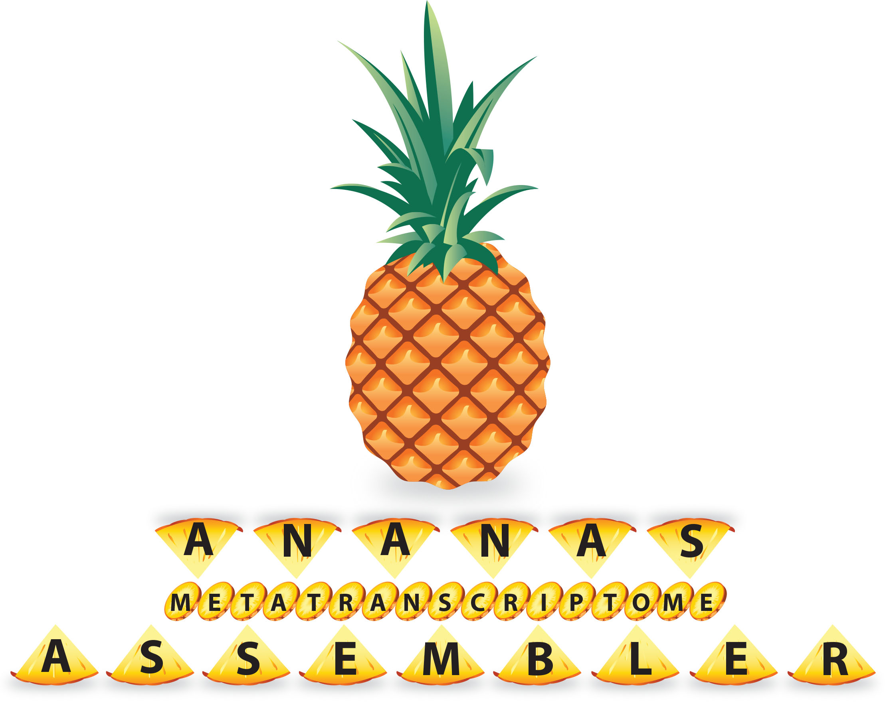

A de-Novo Assembler for RNA-Seq data

Ananas is an assembler for paired-end Illumina RNA-Seq reads.
Following the read-overlap graph concept, it performs particularly
well on mixed-species, i.e. metatranscriptome data sets.
Unlike de Bruijn graph assemblers, Ananas keeps track of each read
throughout the assembly process:
- First, it collapses identical reads to reduce the overlap space.
- Next, it uses a prefix array to find an exhaustive set of overlaps.
Because of that, the overall memory usage and runtime depend more on the complexity of the RNA-Seq data
rather than the number of input reads.
In an A*-type search, it then evaluates different paths through the overlap graph, and ranks
hypotheses based on how many pairs support the hypothesis.
It does
this in a two-step process that first aims at separating the data
into smaller sets (the equivalent of Trinity
components), and then re-evaluates different isoforms.
In addition to providing better specificity on mixed-species data
sets than de Bruijn graph assemblers, it also performs better on
complex and/or repetitive transcripts.
Ananas overview
Flowchart outlining the Ananas components, starting with read grouping, overlapping, and contig/scaffold creation resulting in assembled transcripts.